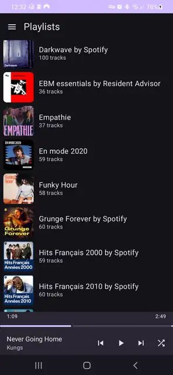
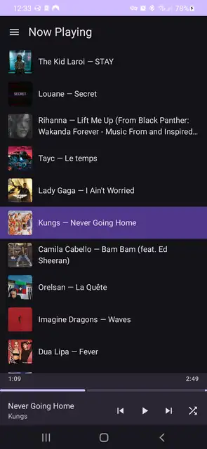

Foldio
صوت وفيديو وموسيقى
Play music that resides in folders. It is more ecological to avoid streaming. Features: * Folder-based playlists: each subfolder of your chosen root becomes a playlist * Playback: play, pause, skip, shuffle; background playback as a foreground service * Multi-playlist shuffle: select multiple playli
✓ ترخيص مفتوح (BSD-3-Clause) · آخر تحديث: 2026-10-22
1.2.0الإصدار
2.6 MBالحجم
BSD-3-Clauseالرخصة
Open in Kanzتحميل APK (2.6 MB)
Download APK
SHA-256: d9c042b210b952db6dd9d7dfea8d72fc62422b4b4439a794d46cb9df920de261


امسح الكود لفتح صفحة التطبيق
Scan to open this app page
لو كنز مش متثبت عندك: نزّل متجر كنز.
Not installed? Get the Kanz store.